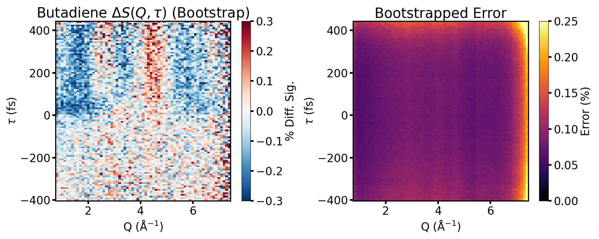

        <section>
          <h3 style="margin: 0 0 0.3em;">The RDW Pulse Also Drives Ultrafast X-ray Scattering</h3>
          
          <div style="font-size: 0.40em; margin-top: 0.5em;">
            <div class="col-box" style="border: 1px solid #ddd; border-radius: 8px; padding: 0.6em 0.9em;">
              <ul style="margin: 0; padding-left: 1.2em;">
                <li>Same RDW pump, gas-phase X-ray scattering of 1,3-butadiene at LCLS</li>
              </ul>
            </div>
          </div>
          <aside class="notes">
            <ul>
              <li>Different experiment — gas-phase scattering, not solution TA — using the RDW/deep-UV pump side of the same fibre technology rather than the broadband soliton probe that's the focus of this talk.</li>
              <li>Bootstrapped difference scattering $\Delta S(Q,\tau)$ over -400 to +400 fs, statistical error below ~5% across most of Q-space.</li>
              <li>Good bridge for a laser-physics audience already comfortable with RDW pump applications — the flip side of the same source.</li>
              <li>Statistics resolve sub-100 fs excited-state onset — sets up the IRF slide that follows.</li>
            </ul>
          </aside>
        </section>
